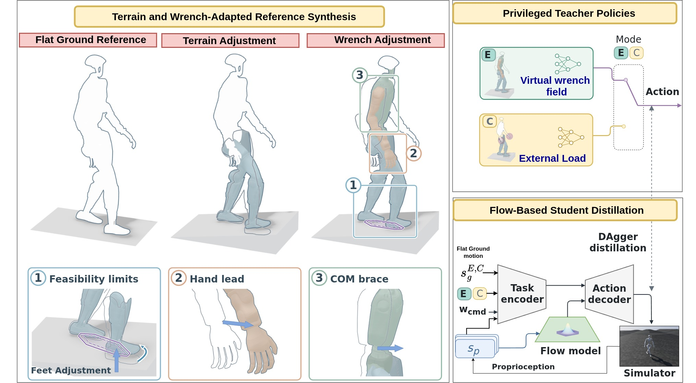
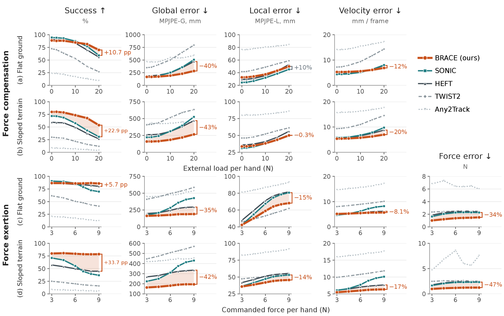
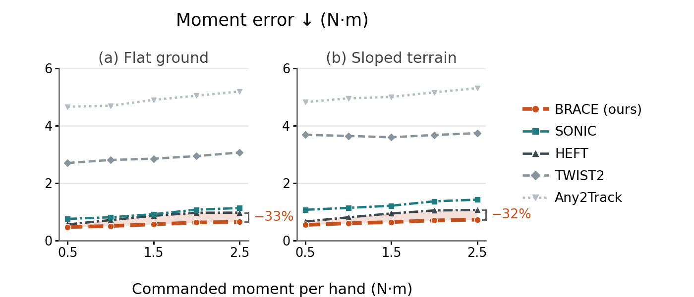

BRACEAdapting Whole-Body References for Force and Terrain Aware Humanoid Motion Tracking
1Multiply Labs2Brown University3University of New Mexico
Force- And Terrain-Aware Whole-Body Control.
Squatting, then walking up the ramp with a 3.5 kg kettlebell.
Repeated barbell curls on outdoor terrain.
Commanded hand force for insertion at a tabletop fixture.
Pushing a cart across ramps with a flat-ground reference.
Following a lifting reference with a 3 kg barbell.
Applying hand torque to turn a forklift winch.
Front and side views of coordinated hand-torque exertion.
Whole-body tracking while carrying a 3.5 kg kettlebell.
Squatting and rising under a 3.5 kg handheld load.
Squatting while exerting hand forces of up to 9 N.
Measured hand force during a 9 N command.
Tabletop motion with terrain traversal shown in the inset.
Baseline Comparisons.
Left: GEAR-SONIC · Right: BRACE
Lifting an object under load.
Tracking a flat-ground reference across a ramp.
Hand-force exertion against a 2 kg resistance band.
Lateral force exertion against a 2 kg resistance band.
Autonomy, Interaction, And Teleoperation.
Autonomous banana transfer with a fine-tuned VLA policy.
Directional commands guide the robot across ramps.
Resistance-band rows with an operator about 1,000 miles away.
Slope traversal with an operator about 1,000 miles away.
Reference Transformations.
From Flat-Ground Motion To An Adapted Reference.
36 s · Method animationStart with a flat-ground pickup trajectory: the input motion in the left panel of the method figure.
Method Overview.


Teacher training and student distillation
Terrain- and wrench-adapted references.
Terrain conformance lifts footholds and root onto the local surface. For exertion, a wrench transformation resolves the hand displacement that produces the force together with the center-of-mass and center-of-pressure shifts it induces, bounded by arm-effort limits.
One teacher per interaction mode.
Teacher-E learns to exert force under a virtual wrench field while tracking the wrench-adapted reference. Teacher-C learns to compensate an external wrench while tracking the terrain-adapted reference.
One policy, proprioception only.
DAgger distills both teachers into one student. A task encoder reads the flat-ground goal, the mode and the wrench command; a flow-matching base models the action distribution from proprioceptive history; an action decoder fuses both.
Read the abstract
Whole-body tracking has become the interface through which operators drive humanoid robots, yet the references it consumes are recorded on level ground and carrying nothing, so the tracker is aware of neither the forces the robot must exchange with objects nor the terrain it must stand on. Existing controllers address one side of this gap: force-capable policies command an end-effector force but prescribe no whole-body pose, while terrain-adaptive trackers treat loads as disturbances to reject rather than wrenches to command.
We present BRACE, a whole-body tracker that exerts and compensates commanded hand forces from diverse poses while following a flat-ground reference on sloped terrain. Rather than leaving the tracker to absorb the load and the slope, BRACE folds both into the reference it follows: terrain conformance lifts footholds and root onto the local surface, and a wrench transformation resolves the hand displacement that produces a force jointly with the center-of-mass and center-of-pressure shifts it induces, bounded by teacher-specific arm-effort limits.
Separate exertion and compensation teachers are distilled by DAgger into one flow-matching student that runs on proprioception alone, without a height map or measured wrench, so a teleoperator (even in remote locations) can supply a flat-ground trajectory and the robot resolves slope and load onboard. We conduct extensive experiments on the Unitree G1 to demonstrate the ability of BRACE to exert and compensate force and handle diverse terrain in simulation and real robot experiments.
Explore quantitative results
Simulation, averaged over the four settings (compensation and exertion, on flat ground and slopes) at each setting's heaviest tested load or command.
The Harder The Setting, The Larger The Margin.
Evaluated in simulation on held-out PHUMA and Bones-seed motions against SONIC, HEFT, TWIST2 and Any2Track. Compensation applies 0–20 N per hand, exertion commands 3–9 N per hand, and slopes range from 4.6° to 17.7°. Every method receives only the flat-ground reference and no terrain information.
Retaining global position and force accuracy under load, not tighter pose imitation. Local error stays close to SONIC's throughout.
Torso, wrists and ankles stay within 0.25 m of their reference heights and torso orientation within 1 rad for the whole motion, and the robot does not drift from its reference position.


| Setting | Load per hand | Success | Global error | Force error |
|---|---|---|---|---|
| Compensation, flat ground | 20 N | +10.7 pp | −40% | – |
| Compensation, sloped terrain | 20 N | +22.9 pp | −43% | – |
| Exertion, flat ground | 9 N | +5.7 pp | −35% | −34% |
| Exertion, sloped terrain | 9 N | +33.7 pp | −42% | −47% |

